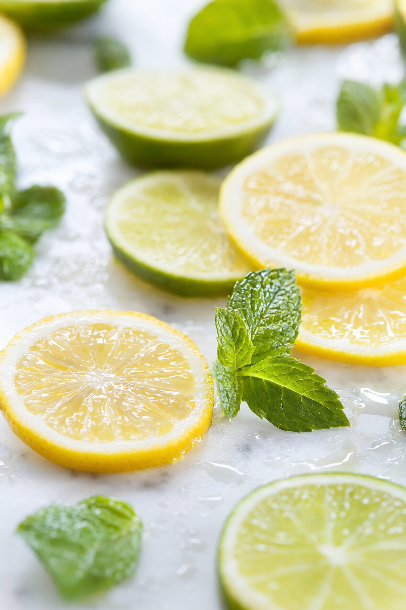
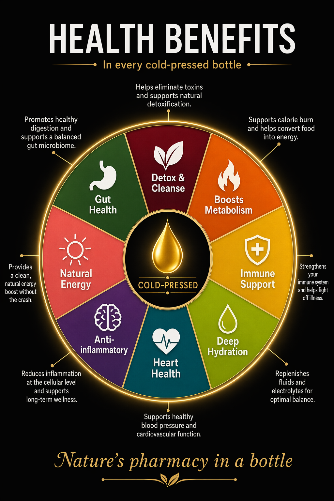

Ozonated Water
Ozonated water is water infused with ozone gas (O3). When ozone dissolves in water, it becomes a powerful therapeutic agent. Unlike gaseous ozone, ozonated water is safe for consumption and is classified by the US FDA as Generally Recognized As Safe (GRAS).
In our process, ozone is bubbled through purified water for a minimum of five minutes until maximum saturation occurs. The result is a cleaning agent that eliminates bacteria, viruses, fungi, parasites, and residual pesticides — then reverts harmlessly to oxygen.
Every piece of produce in a Glengala Fresh juice is washed in it.

3,100× Faster Than Chlorine
As a disinfectant, ozone eliminates pathogens at a rate 3,100 times faster than chlorine. No chemical residue remains after use.
Anti-Inflammatory
A study in Biomedical Reports (2014) found ozonated water reduced TNF-α (inflammatory marker) levels and increased antioxidant enzyme SOD activity by 46%.
Immune System Support
Ozone activates glutathione peroxidase, superoxide dismutase, and catalase — key enzymes in the body's antioxidant defense system.
Gut Health
Ozone kills harmful gut bacteria and yeast upon contact, improving the environment for nutrient absorption and reducing bloating.
Oral Health
Used in dentistry since the 1930s. Clinical studies show significant reduction in Mutans Streptococci (primary cause of tooth decay) after regular use.
FDA GRAS Certified
Classified as Generally Recognized As Safe since 2001. Used safely in food processing, hospitals, and water treatment worldwide.
Beetroot
Used in: Beetroid
Beetroot's power comes from its high nitrate content. Your body converts dietary nitrates to nitric oxide — a molecule that relaxes and widens blood vessels, improving blood flow and oxygen delivery throughout the body.
"Blood flow to your legs can increase by 40–60% after drinking beetroot juice."
"A study shows that people with heart failure experienced a 13% rise in muscle power."
Nitrates → Nitric Oxide
Widens blood vessels, reduces blood pressure, improves circulation.
Athletic Performance
Improves oxygen delivery during workouts, extends endurance.
Heart Health
Reduces systolic blood pressure and improves cardiovascular markers.
Brain Health
Increased blood flow supports cognitive function and brain oxygenation.
Ginger
Used in: Beetroid, Immuni-Tea, Immuni-Fire
Gingerol
The primary bioactive compound. Powers anti-inflammatory and antioxidant effects.
Immune Support
Antiviral properties support the body's defenses.
Digestive Health
Reduces nausea, relieves bloating, supports gut motility.
Cold & Flu
Fights respiratory infections.
Pain Relief
Anti-inflammatory action reduces muscle soreness and joint pain.
Morning Ritual
Sets the tone for the day, activates digestion.
Lemon
Used in: Beetroid, Immuni-Tea, Immuni-Fire, Golden Fire
Lemon serves multiple functions: a concentrated source of vitamin C, a bioavailability enhancer for other nutrients, and an alkalizing agent on the digestive system after metabolism.
Vitamin C
Powers immune function, collagen synthesis, and antioxidant protection.
Enhances Absorption
Lemon's acidity and citric acid improve the bioavailability of other ingredients — crucial for turmeric and iron from beetroot.
Liver & Detox
Citric acid supports kidney function and may reduce kidney stone formation.
Alkalizing Effect
Despite being acidic, lemon has an alkalizing effect on the body's pH after metabolism.

Honey
Used in: Beetroid, Immuni-Tea, Immuni-Fire, Golden Fire
Antibacterial
Honey's hydrogen peroxide content, low pH, and osmotic properties create an environment hostile to bacteria — even antibiotic-resistant strains.
Natural Sweetener
Replaces refined sugar while adding genuine bioactive properties. Doesn't cause the same blood sugar spike as processed sweeteners.
Soothes Cayenne
Honey coats the throat and digestive tract, moderating the intensity of cayenne and making spicy formulas accessible to a wider audience.
Sustained Energy
The combination of fructose and glucose in honey provides immediate energy followed by sustained release — ideal for athletic use.
Turmeric
Used in: Golden Fire
Turmeric's active compound is curcumin — one of the most studied natural anti-inflammatory agents in existence. The catch: curcumin on its own has very poor bioavailability. Your body absorbs almost none of it. This is why Golden Fire pairs turmeric with cayenne.
Cayenne's piperine-equivalent (capsaicin) has been shown to significantly boost the absorption and retention of curcumin in the bloodstream. This is the key synergy behind Golden Fire.
Curcumin Anti-Inflammation
Inhibits NF-κB, a key molecule that triggers the inflammatory response. Works similarly to ibuprofen but without the gastrointestinal side effects.
Joint Health
Multiple clinical trials show curcumin reduces symptoms of osteoarthritis and rheumatoid arthritis.
Brain Support
Curcumin boosts BDNF (brain-derived neurotrophic factor), supporting cognitive function and mood regulation.

Cayenne Pepper
Used in: Immuni-Fire, Golden Fire
Capsaicin
Active compound. Boosts turmeric absorption, stimulates circulation, triggers thermogenesis.
Circulation Boost
Vasodilatory effect increases blood flow — especially useful when combined with ginger in Immuni-Fire.
Metabolism
Thermogenic effect raises core body temperature and metabolic rate.
Sinus Clearing
Capsaicin acts as a natural decongestant, stimulating mucus clearance and opening airways.
Lymphatic Stimulation
Supports lymphatic drainage, assisting the body's waste removal and immune surveillance systems.
Heart Health
Cayenne supports cardiovascular health through blood pressure regulation and anti-platelet aggregation.
Celery Juice
Used in: Straight Celery

Straight celery juice — nothing added — is one of the most studied gut health protocols. The 7-Day Challenge trend alone has accumulated millions of views from people tracking real-world results.
Gut Microbiome
Celery's natural compounds create an unfavorable environment for harmful gut bacteria and yeast, supporting a healthier microbiome balance.
Blood Pressure
Phthalides in celery relax arterial walls and reduce cortisol stress hormones, supporting blood pressure reduction.
Hydration & Detox
High water content combined with natural electrolytes supports kidney function and toxin flushing.
Empty Stomach Protocol
Maximum benefit is achieved on an empty stomach, first thing in the morning. This is the Medical Medium protocol followed by millions.
Combined Benefits of the Glengala Fresh Range
